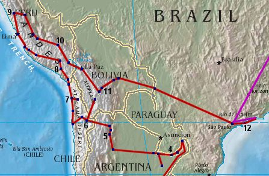

Caroline and Helen's Round-the-World Trip
World Map Page
South America - Northern Argentina, Bolivia, Chile, Peru

Back on the buses from Buenos Aires again to get up to Puerto Iguazu, then coming back round Paraguay,
through San Ignacio and to Posadas [4].
From Posadas we headed west to Corrientes, then south to Mercedes and Esteros del Ibera, before heading back north through Mercedes and Corrientes, then west again to Resistencia, Tucuman, Salta [5] and (San Salvador de) Jujuy.
A quick trip up to the mountain village of Tilcara, then a trek across the Andes took us up to heights of more than 4000m to Chile, where we came down into the Atacama Desert and the oasis town of San Pedro de Atacama [6].
We then headed off into Bolivia, across the salt flats to Uyuni, then came back into Chile via San Pedro, to head out and visit Chuquicamata and Calama, and the costal port town of Antofagosta. Heading up the coast to Tocopilla and Iquique [7], we then headed inland to the Altiplano, and the oasis town of Pica, then back out to Iquique before going as far north in Chile as possible to Arica.
From Arica we headed across the border to Tacna in Peru and then on up to Arequipa [8]. From here we headed north and trekked round the Colca Canyon (Valley of the Condors) before coming back to Arequipa. We then headed out towards the coast, via Nazca and Ica before arriving in Pisco, and then we carried on up the coast to the capital Lima.
From Lima we pushed on north to Huaraz [9], then took a series of buses heading south through Huanuco, Huancayo, Ayacucho and Andahuaylas down to Cusco [10]. From here we were able to explore Machu Picchu and the jungle before heading to Puno on Lake Titicaca, and then across the lake into Bolivia and La Paz.
We then went south down to Potosi, headed back north to the capital Sucre [11], then headed to Santa Cruz via Samaipata. This being our last stop in Bolivia, we took a bus east to the border and the Brazilian town of Corumba, from where we headed into the Pantanal wetlands.
Another long journey from here across Brazil to Sao Paulo, and then along the coast to Paraty [12]. Another short hop to Rio saw us at the end of the trip, and heading back to England - via Sao Paulo again!
From Posadas we headed west to Corrientes, then south to Mercedes and Esteros del Ibera, before heading back north through Mercedes and Corrientes, then west again to Resistencia, Tucuman, Salta [5] and (San Salvador de) Jujuy.
A quick trip up to the mountain village of Tilcara, then a trek across the Andes took us up to heights of more than 4000m to Chile, where we came down into the Atacama Desert and the oasis town of San Pedro de Atacama [6].
We then headed off into Bolivia, across the salt flats to Uyuni, then came back into Chile via San Pedro, to head out and visit Chuquicamata and Calama, and the costal port town of Antofagosta. Heading up the coast to Tocopilla and Iquique [7], we then headed inland to the Altiplano, and the oasis town of Pica, then back out to Iquique before going as far north in Chile as possible to Arica.
From Arica we headed across the border to Tacna in Peru and then on up to Arequipa [8]. From here we headed north and trekked round the Colca Canyon (Valley of the Condors) before coming back to Arequipa. We then headed out towards the coast, via Nazca and Ica before arriving in Pisco, and then we carried on up the coast to the capital Lima.
From Lima we pushed on north to Huaraz [9], then took a series of buses heading south through Huanuco, Huancayo, Ayacucho and Andahuaylas down to Cusco [10]. From here we were able to explore Machu Picchu and the jungle before heading to Puno on Lake Titicaca, and then across the lake into Bolivia and La Paz.
We then went south down to Potosi, headed back north to the capital Sucre [11], then headed to Santa Cruz via Samaipata. This being our last stop in Bolivia, we took a bus east to the border and the Brazilian town of Corumba, from where we headed into the Pantanal wetlands.
Another long journey from here across Brazil to Sao Paulo, and then along the coast to Paraty [12]. Another short hop to Rio saw us at the end of the trip, and heading back to England - via Sao Paulo again!